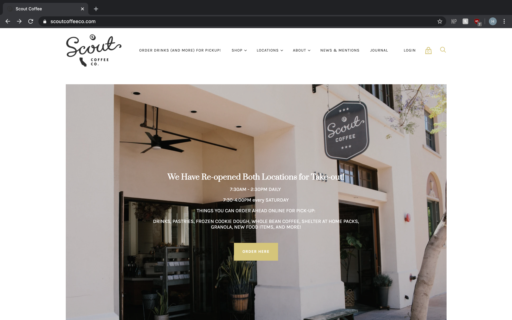
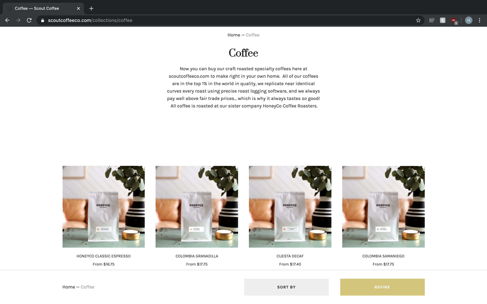
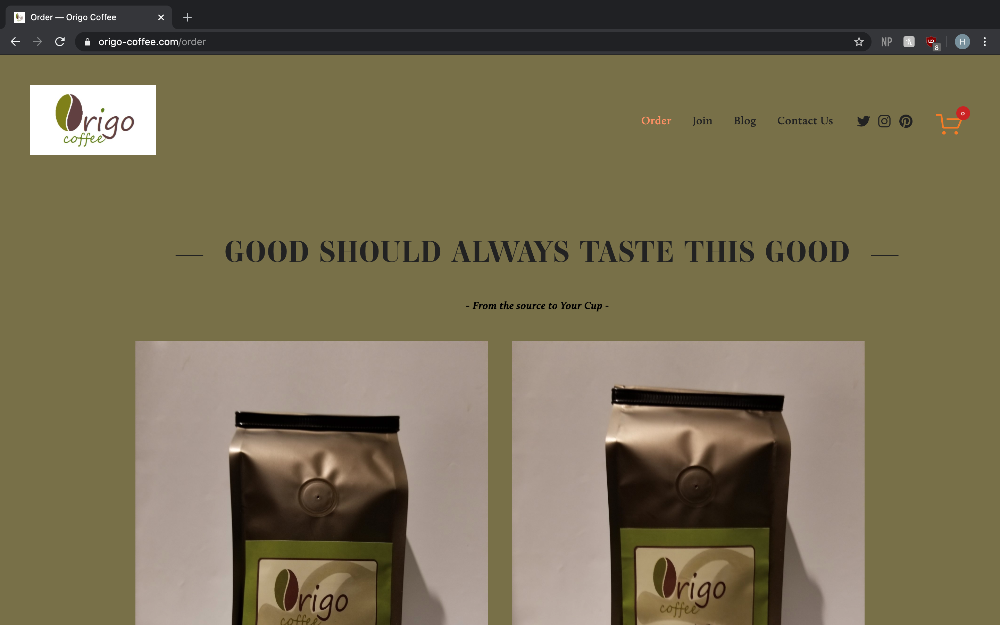
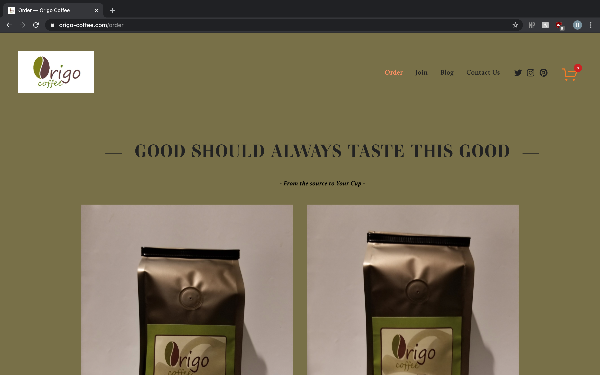
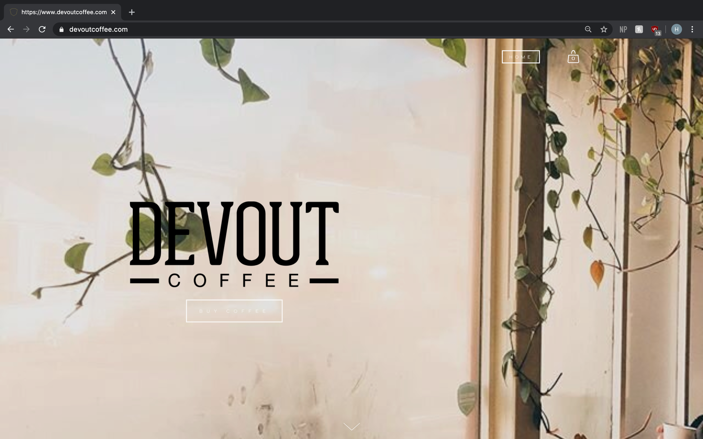
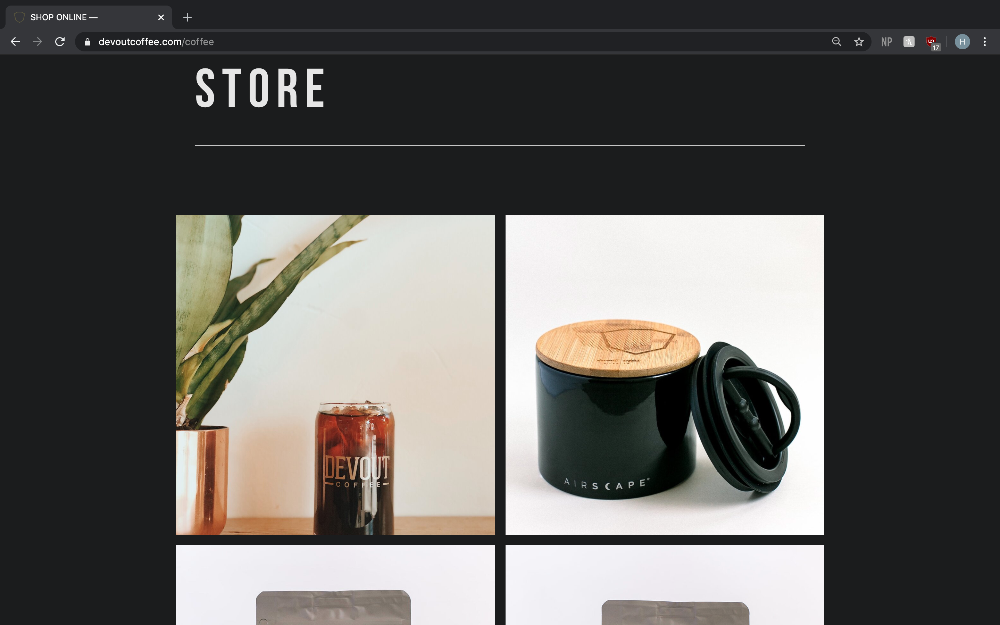

Final project proposal
Introduction
The Grounds
The Grounds is a minimalistic coffee shop – it is your go-to neighborhood joint, any time, any day. Join us for specialty coffee to pep you up in the morning and food to fuel your day, and to get your night started!
Target audience
Coffee enthusiasts will love The Grounds! People who enjoy drinking fresh organic brewed coffee will love our products. Students, young adults, and others who want to stay caffeinated thorughout the day will enjoy our incredible fine blends. Our delivery includes international residents.
All of our coffee grounds are organic and are uniquely blended and crafted by us. Our coffee bar sets the stage for the art of extraction and lets you meet the people with the skill it takes to provide you that amazing cup of coffee. We take every step in that process seriously, striving for the most enjoyable coffee experience for our customers.
Comparative analysis
Scout Coffee
 Origo Coffee
 

Devout
 Website content
Home
Fresh, organic, and handcrafted coffee blends. Experience the full taste of the best coffee.
[barista brewing coffee on machine.]
Menu
Our blends were developed by the leading professionals in the coffee industry.
[two bags of The Ground coffee blends.]
-
The Grounds House Blend
Organic mix of secret house blends with enriching lasting flavors, with a touch of cream and sugar to bring out a pleasant dark sweetness
$14.50
-
Columbian Roast
Big mouth-feel and nougat flavors dominate the cup backed up by a complex character that lets you know you’re drinking something special
$14.00
-
Honeybom Lavender Blend
Sweet with a flavorful lavendar aroma – prefect for early mornings or staying alert on at night
$12.00
-
Earl Grey Dark Tula
Perfect for people who love a strong, heavy bodied coffee with a pronounced Early Grey roast flavor
$14.00
-
New-Orleans Champion Roast
New-Orleans has a tangy acidity yet rich complexity – it's sugary sweet with a fruitiness reminiscent of black currant
$14.50
-
Roasted Vanilla Mint
Rich and chocolaty from start to finish with the same heavy mouth feel all our blends are known for –the perfect coffee for the evening wind down
$15.00
Location
San Francisco, California
[interior of San Francisco location.]
8 Octavia St #308, San Francisco, CA 94102
San Jose, California
[interior of San Jose location.]
12th Street, San Jose, CA 94302
About
We believe coffee should be as simple or complex as you want it to be. From the origin topography, to the water quality used in the end pour and everything in between, we obsess on every possible variable. Our ambition is to serve great tasting coffee from the best organic beans we can source each season from around the world.
[interior of The Grounds SF location.]